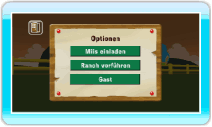
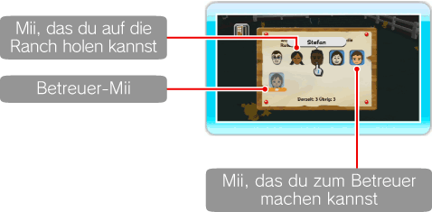
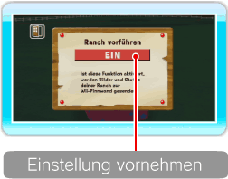

17 |
Optionen |
 |

Hier kannst du Einstellungen für die Optionen MiiS EINLADEN, RANCH VORFÜHREN und GAST vornehmen. ● Miis einladen Du kannst Miis, die du im Mii-Kanal erstellt hast, auf die Ranch bringen. Zeige auf das Mii, das du auf die Ranch holen möchtest und drücke Hinweis: Ein mit 

● Ranch vorführen Mit dieser Funktion werden dein Ranch-Status und Bilder automatisch über WiiConnect24 an deine Freunde übertragen (siehe Abschnitt „23. WiiConnect24 vorbereiten“). Zeige auf die Einstellungsschaltfläche und drücke Hinweis: Für diese Funktion musst du mindestens ein Foto in deinem Album haben.
Einladungen an deine Freunde werden erst nach Verlassen der Software verschickt. Um die Software zu verlassen, wähle ZURÜCK ZUM Wii-MENÜ im Hauptmenü oder im HOME-Menü Wii-MENÜ. ● Gast Wenn diese Funktion aktiviert ist, kann es sein, dass du über WiiConnect24 Überraschungsbesuch auf deiner Ranch bekommst (siehe Abschnitt „23. WiiConnect24 vorbereiten“). Hinweis: Diese Funktion kann jederzeit ohne Ankündigung eingestellt werden. |

 markiertes Mii ist Betreuer auf der Ranch und kann nicht ausgewählt werden.
markiertes Mii ist Betreuer auf der Ranch und kann nicht ausgewählt werden. |
 |
 |